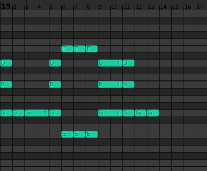
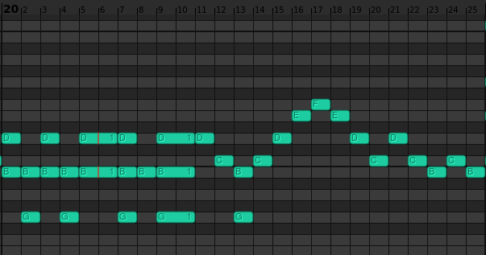

7 Miniatures, Op. 1, are seven short pieces for piano that I wrote during my 2018-2019 composition phase. At the time, I planned on writing 24 preludes as my Opus 1. While working on that, around the time that I had five or so preludes written, I also wrote Two Short Pieces, Op. 2 and a Piece with Impossible Cadenza, Op. 3. In 2020, I repackaged the five (at the time) preludes and the Two Short Pieces into the 7 Miniatures, as the fourth and seventh pieces in the set, but didn't know what to do about Piece with Impossible Cadenza so I left it out. Eventually, I removed the cadenza and stuffed the piece into my 24 Preludes, Op. 26. The Two Short Pieces and Piece with Impossible Cadenza in their original forms are available as 3 Short Pieces, Op. 0.
1. "Arpeggios"
A short piece in C major, based around arpeggios. I find it quite boring now. As stated above, I had planned to write 24 preludes in all the keys as my Opus 1. This was the first of them. In total, five preludes survive (as Miniatures Nos. 1, 2, 3, 5, 6), there were a few more that I tried to write that were even worse than the ones here, which have since been lost. There was also a sketch for a B minor prelude, containing just the first five notes, which was used as the basis for the B minor prelude in the Op. 26 set.
2. "I WAS BORED"
The A minor prelude from the planned set of 24. Easily one of the worst pieces in the set and in my entire oeuvre. It begins with arpeggios, then I get bored and start messing around with polyrhythms, and it concludes with the words "I WAS BORED" on the piano roll.
I WAS BORED written in the piano roll.
3. Untitled
The G major prelude from the planned set of 24. It begins with a strange passage of G's that get out of sync between the hands, has some weird scalar patterns, and ends with a G major chord. Okay relative to the other pieces in the set, still very bad.
4. Untitled
A cute little piece in G major, fairly simple, nothing interesting, neither especially good nor bad. It was the last of the miniatures to be written, and is probably the best (or rather least bad) in the set. One of my compositions of all time. It is also available as the second of the 3 Short Pieces, Op. 0.
5. Untitled
The planned D major prelude, this is a strange piece built around perpetuum 16th notes. At neasyre 7, the left hand just disappears and doesn't appear again until the final I-V7-I (or rather, I6-V42-I6 for some reason) cadence.
6. Untitled
The planned F major prelude, a strange piece written in 5/4 for some reason. Loses what little semblance of competence it had at measure 5.
7. "Odd Time Signatures"
The last miniature is in C major, and uses various unusual time signatures. Most of it is bad, but some of it is also stupid in addition to bad! (Such as the repeated-note passages). Measure 15 says "LOL" and measure 20 says "WHY". It is also available as the first of the 3 Short Pieces, Op. 0.

LOL written in the piano roll.

WHY written in the piano roll.